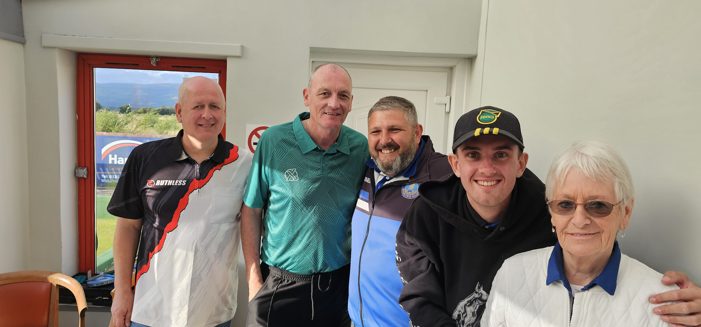

The annual Twa Peters Memorial Tournament took place on Saturday 9th August 2025, at Polmaise Bowling Club. The event, run by Sandy Deans and Gary Malcolmson, once again brought together players, members, and friends for a great day of bowling, camaraderie, and remembrance.
This tournament is held each year in memory of two much-loved past members of the club, Peter Johnstone and Peter Smith, who sadly passed away a few years ago. Their contributions to Polmaise Bowling Club are fondly remembered, and the event stands as a fitting tribute to their friendship and dedication.
David McKean, James Brown, Aaron Furzer
James Wray, Derek Wallace, Gary Malcolmson
Team 1: Josie Kilgannon, Billy Guy, Sandy Deans
Team 2: Wullie Nicol, Robert Johnstone, Martyn "Tino" Scott
A special thank you goes to Rita Smith, wife of the late Peter Smith, who attended the day and joined Club President Alex Brown in presenting the prizes to the winners.
Congratulations to all who took part, and especially to our winners, who put in a fantastic performance to lift this year's title.
Browse through the photos below to relive the memories of this special day. Click on any image to view it in full size.